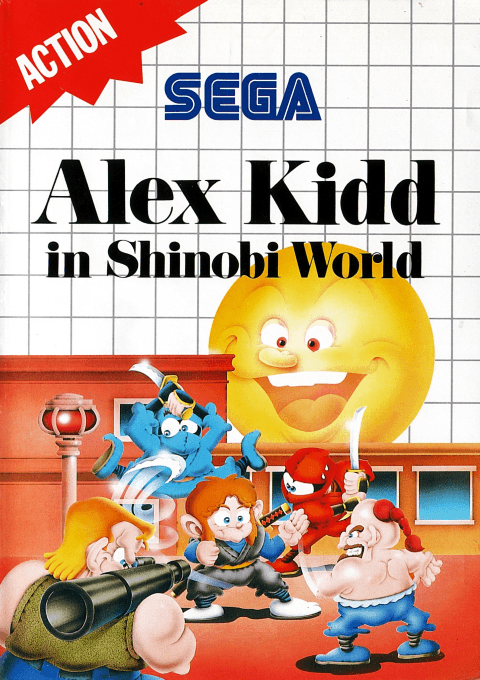
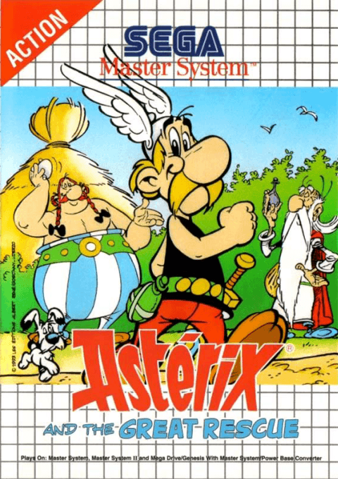
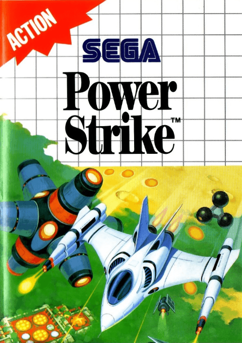
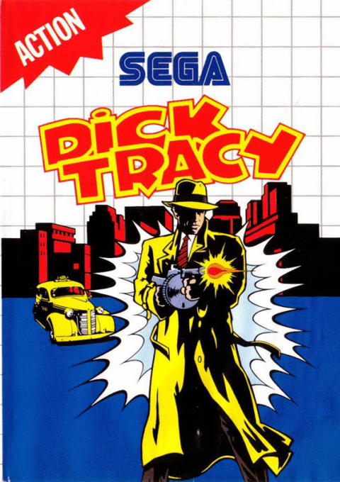
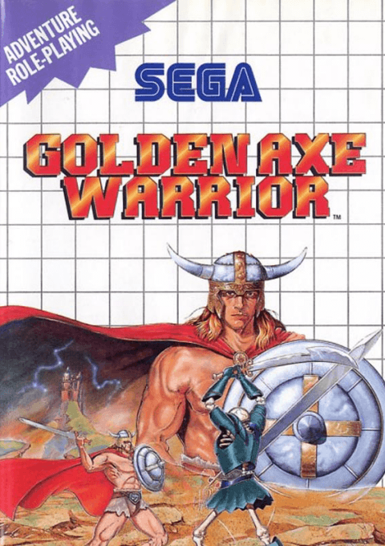
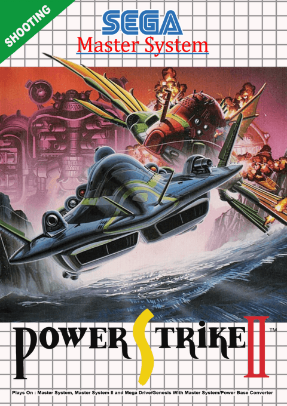
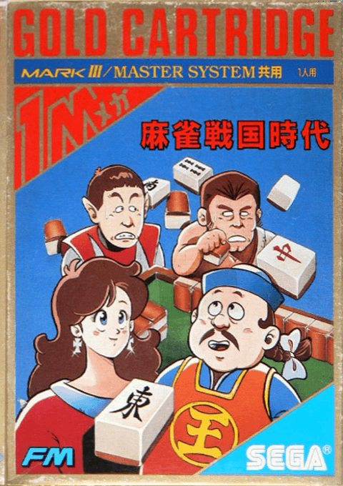
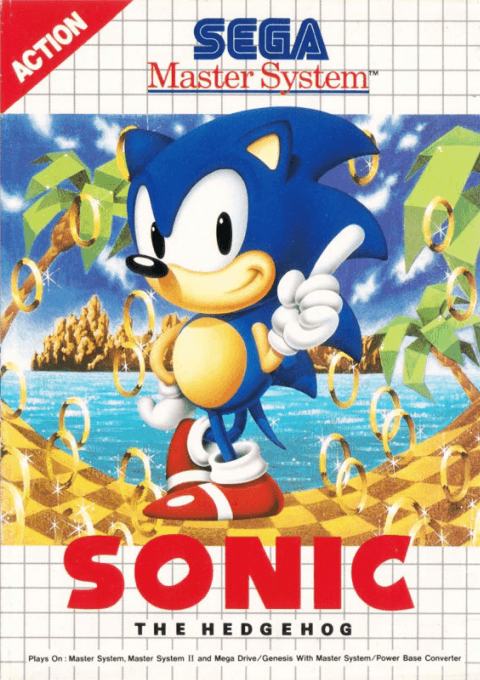
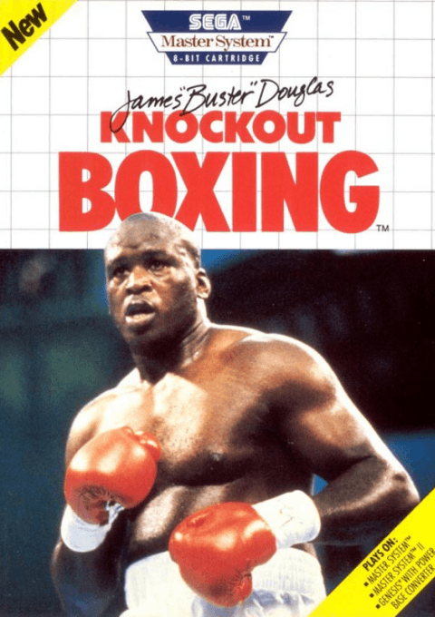

SEGA MASTER SYSTEM · LO QUE HOY CUESTA UNA FORTUNA
MASTER SYSTEM TOP PRECIOS
LOS 10 CARTUCHOS MAS CAROS · PRECIO CIB
MERCADO DE COLECCION 2026
DEL #10 AL #1
Todo este ranking es retail CIB: juegos que se vendieron en tiendas, hoy carisimos por rareza. La Master System no tiene cartuchos de torneo como el NES; aca el grial es un juego retail que nadie esperaba. Empezamos desde abajo.
#10
CIB$120

MASTER SYSTEM
TARROVISIONCH 10
NO SIGNAL
Inserta gameplay aqui
ALEX KIDD IN SHINOBI WORLD
MASTER SYSTEM · 1990 · SEGA
▶ POR QUE ES CAROEl crossover loco entre las dos mascotas de Sega: Alex Kidd con el moveset de Shinobi. Salio tarde, en 1990, cuando todos migraban a Genesis. Tirada chica = caro hoy.
#9
CIB$156

MASTER SYSTEM
TARROVISIONCH 09
NO SIGNAL
Inserta gameplay aqui
GHOULS'N GHOSTS
MASTER SYSTEM · 1990 · SEGA / CAPCOM
▶ POR QUE ES CAROPort del arcade brutal de Capcom, sorprendentemente bueno en 8 bits. Pocas copias y mucha demanda por su dificultad legendaria. Sir Arthur en calzoncillos, otra vez.
#8
CIB$185

MASTER SYSTEM
TARROVISIONCH 08
NO SIGNAL
Inserta gameplay aqui
ASTERIX AND THE GREAT RESCUE
MASTER SYSTEM · 1993 · SEGA
▶ POR QUE ES CAROExclusivo tardio europeo y brasileño de 1993, cuando la consola ya estaba muerta en casi todo el mundo. Tirada chica, demanda de coleccionistas PAL. Sube solo.
#7
CIB$210

MASTER SYSTEM
TARROVISIONCH 07
NO SIGNAL
Inserta gameplay aqui
POWER STRIKE (ALESTE)
MASTER SYSTEM · 1988 · COMPILE
▶ POR QUE ES CAROEl shmup de Compile que tambien esta en nuestro Top Mundial. En Japon era "Aleste", en occidente "Power Strike", con distribucion minima. Suelto ~$80, CIB se va a las 3 cifras.
#6
CIB$250

MASTER SYSTEM
TARROVISIONCH 06
NO SIGNAL
Inserta gameplay aqui
DICK TRACY
MASTER SYSTEM · 1991 · SEGA
▶ POR QUE ES CAROAccion detectivesca basada en la pelicula de 1990. Salio tarde (1991), con poca distribucion. Hoy vale mucho mas de lo que su fama (casi nula) sugiere. Rareza pura.
#5
CIB$310

MASTER SYSTEM
TARROVISIONCH 05
NO SIGNAL
Inserta gameplay aqui
GOLDEN AXE WARRIOR
MASTER SYSTEM · 1991 · SEGA
▶ POR QUE ES CAROSorpresa: NO es un beat'em up como Golden Axe. Es un action-RPG clon descarado de Zelda, y muy bueno. Late release de 1991, super buscado por coleccionistas hoy.
#4
CIB$530

MASTER SYSTEM
TARROVISIONCH 04
NO SIGNAL
Inserta gameplay aqui
POWER STRIKE II
MASTER SYSTEM · 1993 · COMPILE
▶ POR QUE ES CAROEl shmup mas raro de la consola. Solo salio en PAL y Brasil, NUNCA en Japon ni USA, y casi no se fabrico. De $60 en 2012 a $530 hoy: apreciacion brutal.
#3
CIB$600

MASTER SYSTEM
TARROVISIONCH 03
NO SIGNAL
Inserta gameplay aqui
MAH-JONG
MASTER SYSTEM · 1987 · SEGA
▶ POR QUE ES CAROJuego de fichas asiatico con tirada minima. Casi nadie lo conoce en occidente y casi nadie lo conserva. Valor por rareza PURA, no por gameplay famoso.
#2
CIB$630

MASTER SYSTEM
TARROVISIONCH 02
NO SIGNAL
Inserta gameplay aqui
SONIC THE HEDGEHOG (8-BIT)
MASTER SYSTEM · 1991 · ANCIENT / SEGA
▶ POR QUE ES CAROEl combo perfecto: la marca Sonic + tirada baja (el de Genesis salio primero y la gente migro) + ultimo juego oficial en Norteamerica. Demanda de fans dispara el CIB.
#1
CIB$1.300

MASTER SYSTEM
TARROVISIONCH 01
NO SIGNAL
Inserta gameplay aqui
JAMES "BUSTER" DOUGLAS KNOCKOUT BOXING
MASTER SYSTEM · 1990 · SEGA · EL SANTO GRIAL
▶ EL SANTO GRIALEl Master System mas caro de TODOS. Y lo increible: es un juego de boxeo OLVIDADO, no una joya conocida. Tirada minima en USA durante el ocaso de la consola. Vale mas que Sonic, Phantasy Star y medio catalogo top JUNTOS.
ANALISIS DEL TOP
EL VEREDICTO
La leccion del Master System: lo caro no es lo bueno ni lo famoso, es lo RARO. Late releases que nadie compro, exclusivos PAL/Brasil y curiosidades de nicho. El catalogo amado (Phantasy Star, Wonder Boy) es relativamente barato; el grial es un juego de boxeo que fracaso. Asi de loco es el coleccionismo.
TU TURNO
¿TENIAS ALGUNO?
¿Tienes alguno de estos botado en una caja? ¿Te sorprende el #1? Dejalo en los comentarios. Suscribete a Retrotarros: se vienen los precios de Mega Drive, Dreamcast y Saturn. Y ojo, ahi si que hay graales.